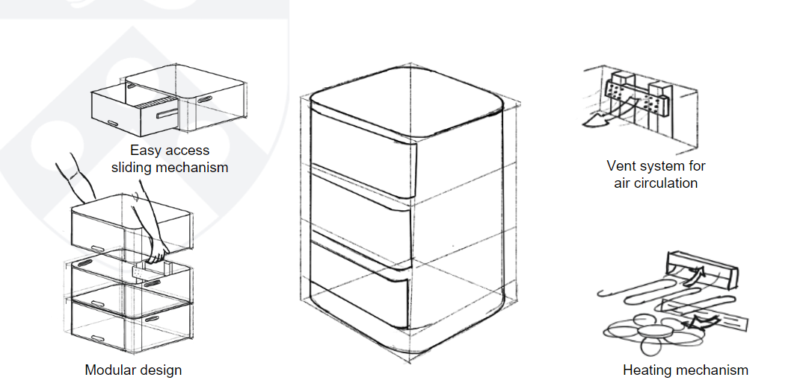

Introducing SoleDry: A Smart Shoe Drying Box!
SoleDry is a smart shoe dryer system that ensures your footwear is dried efficiently without compromising quality. Specifically designed for people living in regions with heavy monsoons, for ex: India, Bangladesh, Korea, China, Japan, etc, SoleDry offers a reliable and easy way to take care of your shoes in a way that has never been done before. From the working class to the school-going children, SoleDry is the solution for all the problems your shoe faces during monsoons, be it the wetness that doesn’t dry in the humid atmosphere naturally, or be it the smell that comes with wet shoes, or be it the reduction of the lifespan of the shoe. Sole Dry is the SOLE solution to all your wet shoe problems.
2. Motivation
Problem: Wet shoes, especially in countries with long rainy seasons, lead to bad odors, bacterial growth, and a shorter shoe lifespan. Traditional drying methods are often inefficient and can damage shoes due to improper temperature control or excessive moisture retention, making it difficult to maintain shoe quality and hygiene.
Interesting Because: SoleDry provides an innovative, automated solution to a common problem by using real-time humidity and temperature control to efficiently dry shoes without compromising their quality. It's particularly useful in humid climates, offering a sustainable way to extend shoe lifespan and improve hygiene.
Intended Purpose: The goal is to create an efficient, user-friendly system that dries shoes overnight, prevents odor, and maintains the structural integrity of shoes. It ensures shoes remain fresh and usable, making it a convenient and sustainable tool for everyday life, especially during wet seasons.
5. Design Sketches

6. Software Requirements Specification (SRS)
6.1 Overview
SoleDry is a system designed to automate the process of drying wet shoes. The software controls various input devices such as humidity, temperature, and weight sensors, as well as output devices like relays, fans, and heaters. The system processes sensor data, makes decisions based on pre-set thresholds, and displays real-time data to the user on an integrated display and through IoT (Blynk) connectivity for remote monitoring and control.
6.2 Users
- Primary Users: Individuals looking to dry their shoes in a controlled environment, especially in regions with long rainy seasons or humid climates.
- System Administrators: Users responsible for setting up and maintaining the hardware and software, adjusting thresholds and monitoring performance.
- Remote Users: Individuals who want to monitor and control the drying process through the Blynk IoT platform via their mobile devices.
6.3 Definitions, Abbreviations
- ATmega328pb: The microcontroller used to control output devices and read sensor data.
- ESP32: A microcontroller with built-in Wi-Fi for IoT capabilities, used for remote monitoring and control.
- Blynk IoT: A platform for remote device monitoring and control through mobile applications.
- SRS: Software Requirements Specification.
- PWM: Pulse Width Modulation used to control fan speed.
6.4 Functionality
- SRS 01 – Humidity and temperature sensors will continuously monitor the environment, sending data to the ATmega328pb every second and sending heater temperature every second as well, with comparisons made every 30 seconds.
- SRS 02 – The weight sensor will measure and update the shoe weight with a precision of 20 grams, and values will be logged every 30 seconds.
- SRS 03 – Relay switches will control the heater and fans based on pre-set temperature thresholds at 30°C, observed every 30 seconds.
- SRS 04 – The display will update every second to show the current temperature, humidity, and weight, as well as the percentage of drying progress.
- SRS 05 – The user can adjust the mode (Automatic, Manual, and Profile mode) via the buttons, with input processing every 30 seconds. (For the final demonstration, focus is on the automatic mode only.)
7. Hardware Requirements Specification (HRS)
7.1 Overview
The system detects the weight of wet shoes placed inside a box and turns on the heating mechanism based on the weight, temperature, and humidity inside the box. The system uses a heating coil for drying, with fans circulating hot, dry air. Sensors continuously monitor the coil’s temperature to prevent overheating. A display shows the weight of the wet shoes and calculates the estimated time to dry the shoes completely, providing real-time feedback.
7.2 Definitions, Abbreviations
- ATmega328pb: A low-power microcontroller used to control relays, heater, and fans based on sensor inputs.
- ESP32: A Wi-Fi-enabled microcontroller responsible for wireless communication and remote control via Blynk IoT.
- LCD: Liquid Crystal Display used to show real-time stats (humidity, temperature, weight) to the user.
- Relay: An electrical switch used to control high-power devices like the heater and fans.
7.3 Functionality
- HRS 01 – The project shall be based on the ATmega328pb microcontroller to control relays, heating coil, fans, and process sensor data.
- HRS 02 – A sensor shall be used to detect the weight of the wet shoe placed in the box. The sensor shall measure weight with an accuracy of 20 grams and send data to the microcontroller.
- HRS 03 – A heater shall be used as the drying element. The coil’s temperature shall be continuously monitored by a temperature sensor to avoid overheating. The system shall shut down the coil if the temperature exceeds a preset limit of 30°C.
- HRS 04 – Two 5V fans shall be used to ensure the circulation of hot air inside the box. The fans shall operate in conjunction with the heating coil to provide an even airflow.
- HRS 05 – An LCD display shall be used to show the real-time weight of the shoe and the estimated drying time. The drying time will be calculated based on the weight and environmental conditions (temperature and humidity).
- HRS 06 – A temperature and humidity sensor shall be used to monitor the humidity and temperature inside the box, ensuring optimal drying conditions are maintained.
- HRS 07 – Relays shall control the power supply to the heating coil and fans, turning them on or off based on the shoe weight, temperature, and humidity readings.
- HRS 08 – A 5V power supply block shall power the microcontrollers and input devices, while a 12V power supply shall be used for the relays and output devices (fans), and AC supply for the heater.
8. Components
9. Final Demo
What do you expect to achieve by the final demonstration or after milestone 1?
By Milestone 1, we expect to:
- Have a finalized component list.
- Place orders for all required parts (sensors, relays, microcontrollers, etc.).
- Begin working on setting up basic components such as switches, clock settings, and initial coding for the microcontroller.
By the Final Demonstration Day, we expect to:
- Have a fully functional prototype.
- Complete several successful test runs to demonstrate the system’s ability to dry shoes efficiently using humidity, temperature, and weight control.
- Showcase the system’s display, user interface, and Blynk IoT integration for remote monitoring and control.
10. Methodology
What is your approach to the problem? Our approach to designing a smart shoe dryer tackles the problem of wet and odorous shoes by combining efficient drying with hygiene management and user-friendly controls. Here’s the breakdown:
Core Functionality:
-
Moisture & Odor Control: Incorporating a heating element with a fan to circulate warm air, promoting quick drying while minimizing condensation. An odor and germ filter is included to reduce bacteria and odors, addressing the hygiene aspect effectively.
-
Temperature and Humidity Monitoring: Sensors monitor real-time conditions inside the dryer to optimize heating intensity and ventilation based on moisture levels.
Automation & Safety:
-
Controlled by ATmega328PB: The ATmega328PB serves as the main controller, processing sensor inputs to dynamically adjust the heater and fan, maintaining safe and effective drying without overheating.
-
Relay and Safety Logic: The ATmega controls relays to manage high-power components, ensuring safe and responsive device operation.
User Experience & Remote Control:
-
Local Display for Status: A compact OLED or LCD display shows drying status, humidity, and temperature, giving users a clear, at-a-glance understanding of the device’s operation.
-
Wi-Fi & Blynk IoT Integration: The ESP32 module connects the device to Wi-Fi and integrates with the Blynk IoT platform, allowing remote monitoring and control. Users can start, stop, or adjust settings via their smartphone, enhancing convenience and accessibility.
Design and Maintenance:
-
Modular & Lightweight Design: The dryer will have a modular, lightweight enclosure that is easy to disassemble for cleaning, ensuring that maintenance is minimal and user-friendly.
11. Evaluation
-
Drying Time: One of the primary metrics is the time it takes to dry the shoes. The initial target is to dry the shoes within 6 hours. Future improvements will focus on reducing this drying time without increasing energy consumption or causing any damage to the shoes.
-
Accuracy of Dryness Detection: The system will use both weight and humidity as measures to determine when the shoes are fully dry. The accuracy of these readings, such as the weight fluctuation within +/- 50 grams and relative humidity levels, will be key in ensuring the shoes are dried without being overexposed to heat, which can damage them.